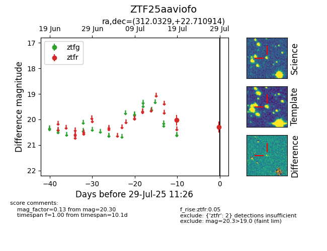

Target ZTF25aaviofo at 2025-07-29 11:26, see:
FINK: fink-portal.org/ZTF25aaviofo
Lasair: lasair-ztf.lsst.ac.uk/objects/ZTF25aaviofo
ALeRCE: alerce.online/object/ZTF25aaviofo
alt names
ZTF25aaviofo (ztf,fink)
coordinates:
equatorial (ra, dec) = (312.0329,+22.71091)
galactic (l, b) = (67.1934,-12.95258)
photometry
last ztfr=20.30
2 ztfr detections
